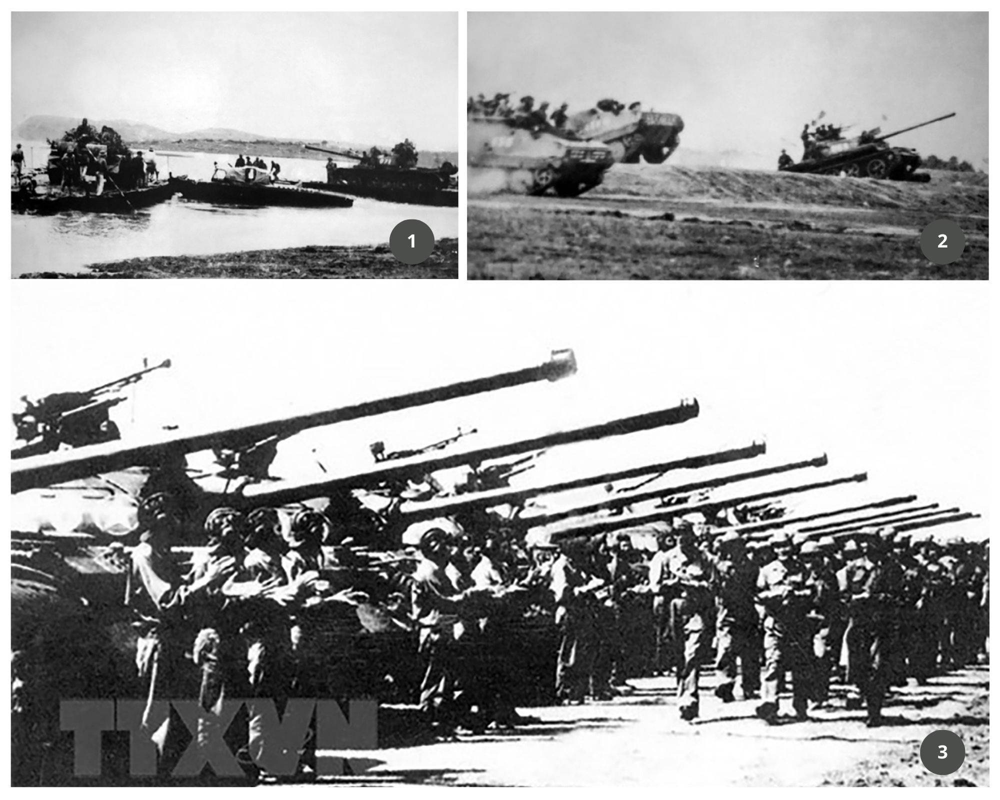

Các hình ảnh về chiến dịch 30/4 - Ngày giải phóng miền Nam, thống nhất đất nước
Đại tướng Võ Nguyên Giáp cùng các đồng chí trong Quân ủy Trung ương duyệt phương án tác chiến Chiến dịch Hồ Chí Minh (Hà Nội, 4-1975). Ảnh: TTXVN

Ảnh 1: Xe tăng của Quân đoàn 1 vượt sông, chuẩn bị tham gia Chiến dịch Hồ Chí Minh, ngày 2-4-1975.
Ảnh 2: Lực lượng thọc sâu của Quân đoàn 1 vượt đường 16 tiến vào giải phóng Sài Gòn.
Ảnh 3: Quân Giải phóng chuẩn bị lực lượng trước giờ tổng công kích vào Sài Gòn – Gia Định với tinh thần “Thần tốc, táo bạo, bất ngờ, chắc thắng” (26-4-1975).
Bộ đội Quân đoàn 3 đánh chiếm sân bay Tân Sơn Nhất. Ảnh: Tư liệu/TTXVN
Ảnh trái: Nhân dân Sài Gòn đổ ra đường đón chào quân giải phóng chiếm phủ Tổng thống ngụy, trưa 30-4-1975. Ảnh: Tư liệu/TTXVN
Ảnh phải: Nhân dân Sài Gòn ra đường đón chào quân Giải phóng, ngày 30-4-1975. Ảnh: TTXVN